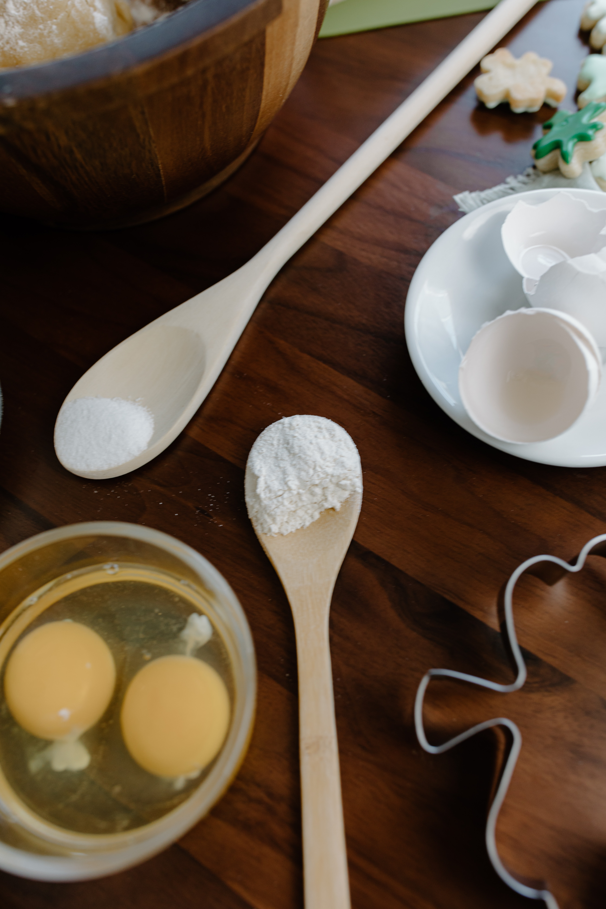

Description
This is a traditional African meal prepared for centuries on the Continent
A nutrition filled meal, an egg
Ingredients
- 1 Ostrich egg
- 1 Red Bell Pepper Diced
- 3 Spring Onion Diced
- 1/2 cup Cheddar Cheese Grated
- 3 knobs Butter
- 6 tbsp Milk
- Salt to taste
- Pepper to taste
- Fresh Thyme to garnish
Steps
- Dust a chopping board with 2 tablespoons of flour and a good pinch of salt and pepper, and toss your chunks of meat through this mixture until well coated. Heat a large pan on a high heat, add a few lugs of olive oil and fry your meat for 3 minutes to brown it. Add your chopped onions, carrots, rosemary and the knob of butter. Add a few tablespoons of water, give everything a good stir, then pop the lid on the pan and let everything steam for 4 to 5 minutes so the flavours really mingle together.
- Use the back of a knife to crack the shell of the ostrich egg, being careful with your fingers. Pour the egg into a large mixing bowl.
- Add diced red bell pepper, diced spring onion, milk, salt and pepper to the mixing bowl.
- Using a whisk, give the mixture a good mix to bring the ingredients together.
- On a low heat, add the knobs of butter to a frying pan until melted.
- Gently pour in the omelette mixture, moving the mixture from the edges in the beginning until it begins to set.
- Once one side has set enough to get leverage underneath with a spatula, flip it over so that it can cook on both sides. It should only take 2 minutes for the mixture to be flippable.
- Add your cheddar cheese on top, spread evenly so that it melts through.
- Cook for a further 2 minutes. Check that it is thoroughly cooked by poking with a knife and ensuring there are no watery bits still lingering in the pan.
- Once it is cooked, flip half of the omelette onto the other half to create a semi-circle and remove from the pan to the plate.
- Season with thyme and additional salt and pepper to taste.